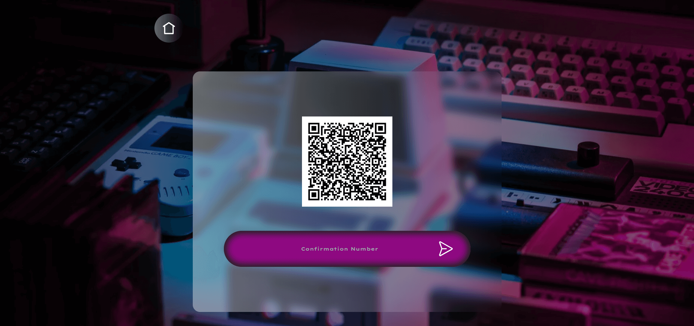
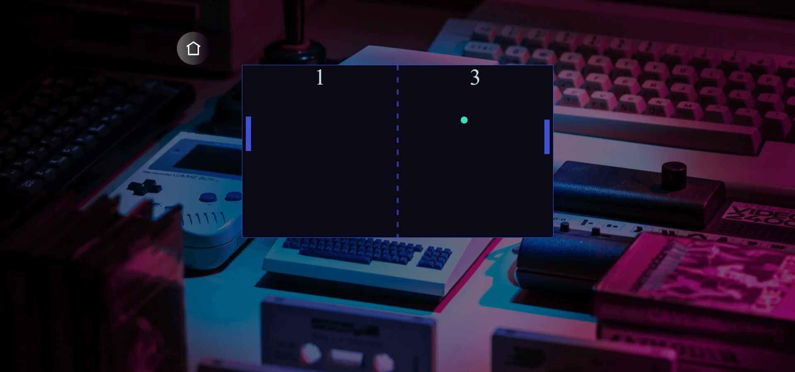
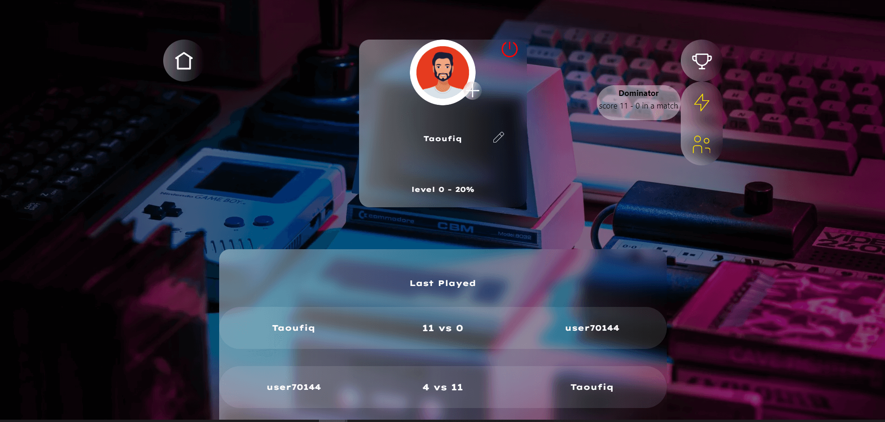

‣ Group project of 4 people
‣ Authentication using social login (Login with ...)
‣ User data management
‣ SQL database
‣ Dockerization
‣ Two-Factor Authentication
‣ Real time chatting and playing using WebSocket